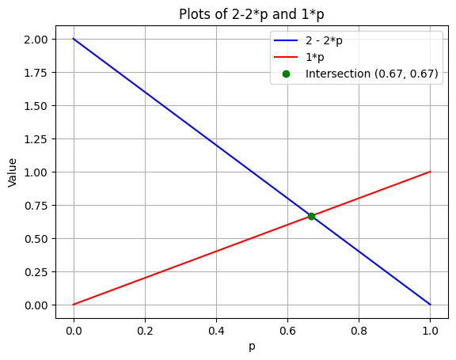
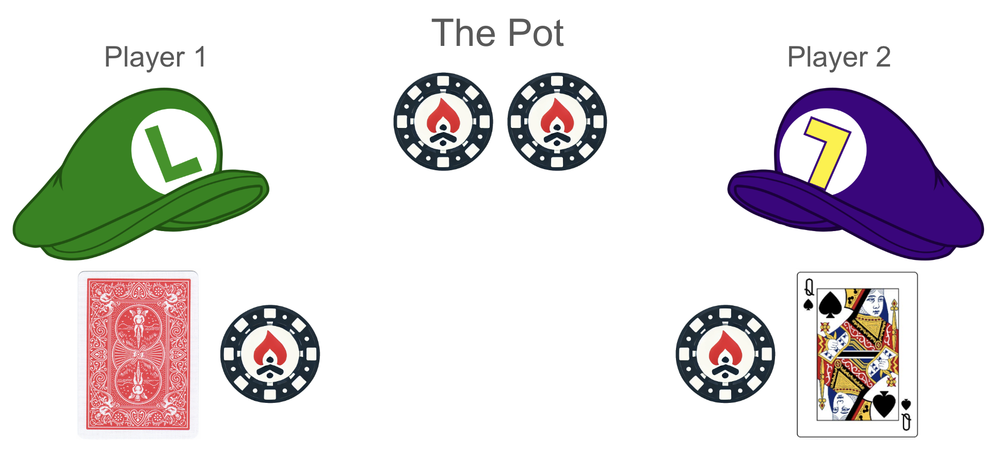

Challenge 2: Other Games
Review of Challenge 1
Goal: Equilibrium agent, later opponent modeling
What does best bot vs you look like? What is your exploitability?
Tournament Results
How the Interactive Works
Odds vs. probs Regret Full CFR details next session Show equations and graphs of how things correct when a single probability is thrown off
Optimal Strategies
Surprise! There are multiple Nash equilibria in Kuhn!
Value of the game
Position thing
Principle of 3 general types of hands and how it applies to regular poker
Pure vs. Mixed Strategies
Gradient Descent: Involves iteratively adjusting parameters to minimize a cost function. Each step moves the parameters in the direction of the negative gradient of the cost function, gradually converging to a local or global minimum. Aims to converge to the optimal parameters that minimize the cost function. With an appropriate learning rate and sufficient iterations, it can find the minimum. Utilizes feedback from the gradient of the cost function at each iteration to update the parameters. Focuses on a static objective function (cost function) and aims to find its minimum.
Regret Minimization: In online learning and decision-making contexts, it involves iteratively updating strategies to minimize regret, which is the difference between the actual cumulative loss and the best possible cumulative loss in hindsight. Each step adjusts the strategy based on past performance to improve future decisions. Aims to minimize regret over time, which means the strategy becomes nearly as good as the best fixed strategy in hindsight. With enough iterations, the average regret per iteration tends to zero. Utilizes feedback from past performance (losses) to update the strategy, aiming to reduce future regret. Focuses on a dynamic objective (minimizing regret over time) in potentially changing environments, where the best action may vary over time.
Regret Matching: Involves iteratively updating the probability distribution over actions based on past regrets. Actions with higher regrets (indicating they would have performed better in the past) are chosen more frequently in the future. Uses past regrets to update the probability distribution over actions. The probability of selecting each action increases proportionally to the regret of not having taken that action.
Pruning and compare to CFR
Concept: Nash Equilibrium
Nash vs. opponent exploitation A set of strategies for both players such that neither player ever plays an action with regret (when they take those strategies as given) is a Nash equilibrium.
Recall that regret only makes sense in the context of a particular strategy and assumed opponent’s strategy. When you submitted to the challenge, you submitted a strategy for being P1, and a strategy for being P2, but you won’t ever play against yourself – so why is it helpful to find a pair that plays against itself without regret?
The other paradigm for playing games is opponent exploitation, which we will address in future sections.
Indifference
Consider the Soccer Penalty Kick problem where a Kicker is trying to score a goal and the Goalie is trying to block it.
| Kicker/Goalie | Lean Left | Lean Right |
|---|---|---|
| Kick Left | 0, 0 | +2, -2 |
| Kick Right | +1, -1 | 0, 0 |
The game setup is zero-sum. If Kicker and Goalie both go in one direction, then it’s assumed that the goal will miss and both get \(0\) payoffs. If the Kicker plays Kick Right when the Goalie plays Lean Left, then the Kicker is favored. If the Kicker plays Kick Left when the Goalie plays Lean Right, then the kicker is even more favored, because it’s easier to kick left than right.
When the Goalie plays left with probability \(p\) and right with probability \(1-p\), we can find the expected value of the Kicker actions.
| Kicker/Goalie | Lean Left (p) | Lean Right (1-p) |
|---|---|---|
| Kick Left | 0, 0 | +2, -2 |
| Kick Right | +1, -1 | 0, 0 |
\(\mathbb{E}(\text{Kick Left}) = 0*p + 2*(1-p) = 2 - 2*p\)
\(\mathbb{E}(\text{Kick Right}) = 1*p + 0*(1-p) = 1*p\)
The Kicker is going to play the best response to the Goalie’s strategy. The Goalie wants to make the Kicker indifferent to Kick Left and Kick Right because if the Kicker was not going to be indifferent, then he would prefer one of the actions, meaning that action would be superior to the other. Therefore the Kicker will play a mixed strategy in response that will result in a Nash equilibrium where neither player benefits from unilaterally changing strategies. (Note that indifferent does not mean 50% each, but means the expected value is the same for each.)

By setting the values equal, we get \(2 - 2*p = 1*p \Rightarrow p = \frac{2}{3}\) as shown in the plot. This means that \(1-p = 1 - \frac{2}{3} = \frac{1}{3}\). Therefore the Goalie should play Lean Left \(\frac{2}{3}\) and Lean Right \(\frac{1}{3}\). The value for the Kicker is \(\frac{2}{3}\), or \((0.67)\), for both actions, regardless of the Kicker’s mixing strategy.
Note that the Kicker is worse off now (\(0.67\) now compared to \(0.75\)) than when both players played 50% each action. Why?
If the Kicker plays Left with probability \(q\) and Right with probability \(1-q\), then the Goalie’s values are:
\(\mathbb{E}(\text{Lean Left}) = 0*q - 1*(1-q) = -1 + q\)
\(\mathbb{E}(\text{Lean Right}) = -2*q + 0 = -2*q\)
Setting equal,
\[ \begin{equation} \begin{split} -1 + q &= -2*q \\ -1 &= -3*q \\ \frac{1}{3} &= q \end{split} \end{equation} \]
Therefore the Kicker should play Left \(\frac{1}{3}\) and Right \(\frac{2}{3}\), giving a value of \(-\frac{2}{3}\) to the Goalie.
We can see this from the game table:
| Kicker/Goalie | Lean Left (\(\frac{2}{3}\)) | Lean Right (\(\frac{1}{3}\)) |
|---|---|---|
| Kick Left (\(\frac{1}{3}\)) | 0, 0 (\(\frac{2}{9}\)) | +2, -2 (\(\frac{1}{9}\)) |
| Kick Right (\(\frac{2}{3}\)) | +1, -1 (\(\frac{4}{9}\)) | 0, 0 (\(\frac{2}{9}\)) |
Therefore the expected payoffs in this game are \(\frac{2}{9}*0 + \frac{1}{9}*2 + \frac{4}{9}*1 + \frac{2}{9}*0 = \frac{6}{9} = 0.67\) for the Kicker and \(-0.67\) for the Goalie.
In an equilibrium, no player should be able to unilaterally improve by changing their strategy. What if the Kicker switches to always Kick Left?
| Kicker/Goalie | Lean Left (\(\frac{2}{3}\)) | Lean Right (\(\frac{1}{3}\)) |
|---|---|---|
| Kick Left (\(1\)) | 0, 0 (\(\frac{2}{3}\)) | +2, -2 (\(\frac{1}{3}\)) |
| Kick Right (\(0\)) | +1, -1 (\(0\)) | 0, 0 (\(0\)) |
Now the Kicker’s payoff is still \(\frac{1}{3}*2 = 0.67\).
When a player makes their opponent indifferent, this means that any action the opponent takes (within the set of equilibrium actions) will result in the same payoff!
So if you know your opponent is playing the equilibrium strategy, then you can actually do whatever you want with no penalty with the mixing actions. Sort of.
The risk is that the opponent can now deviate from equilibrium and take advantage of your new strategy. For example, if the Goalie caught on and moved to always Lean Left, then expected value is reduced to \(0\) for both players.
To summarize, you can only be penalized for not playing the equilibrium mixing strategy if your opponent plays a non-equilibrium strategy that exploits your strategy.
Kuhn Poker
Back to poker. We can apply this indifference principle in computing equilibrium strategies in poker. When you make your opponent indifferent, then you don’t give them any best play.
If you play an equilibrium strategy, opponents will only get penalized for playing hands outside of the set of hands in the mixed strategy equilibrium (also known as the support, or the set of pure strategies that are played with non-zero probability under the mixed strategy). If opponents are not playing equilibrium, though, then they open themselves up to exploitation.
Let’s look at one particular situation in Kuhn Poker and work it out by hand. Suppose that you are Player 2 with card Q after a Check from Player 1.

We can work out Player 2’s betting strategy by calculating the indifference. Let \(b\) be the probability that P2 bets with a Q after P1 checks.
$$ \[\begin{equation} \begin{split} \mathbb{E}(\text{P1 Check K then Fold to Bet}) &= 0 \\ \\ \mathbb{E}(\text{P1 Check K then Call Bet}) &= -1*\Pr(\text{P2 has A and Bets}) + 3*\Pr(\text{P2 has Q and Bets}) \\ &= -1*\frac{1}{2} + 3*\frac{1}{2}*b \\ &= -0.5 + 1.5*b \end{split} \end{equation}\] $$
Setting these equal:
\(0 = -0.5 + 1.5*b\)
\(b = \frac{1}{3}\)
Therefore in equilibrium, P2 should bet \(\frac{1}{3}\) with Q after P1 checks.
TO DO: - What if the bet size was 2 instead of 1?
Can you come up with a general formula for how often to bluff given a pot and bet size?
Range of hands vs. range of hands vs. your hand vs. their strategy. Different if their strategy never changes.
What is a creative strategy to try against a player who studies poker and is trying to play an equilibrium strategy, but might be open to changing their strategy? Bet sizes they haven’t studied, do something crazy and then counterexploit?
Node locking question
In what case could we deduce our opponent’s strategy with a large sample size? Note: We can assume that they are playing the pure strategy decisions correctly.
For example, if we as P1 Check with K, we can know how often they’re betting Q since we know they’ll always bet A.
Over a sample of 1000 hands that we Check with K, we expect that 500 times they would have Q and 500 times they would have A. We expect that they would always bet with A and bet some percentage \(p\) of their Q hands.
Formula for how often they’re betting Q.
What’s another case we could determine? Bet Q, how often call/fold K. How to use this?
Types of Games
| Game/Opponent | Fixed/Probabilistic Opponent | Adversarial Opponent |
|---|---|---|
| Imperfect Info, No Player Agency/Decisions | ||
| Perfect Info, Player Actions Always Perfect Info | ||
| Imperfect Info, Imperfect from Randomness | ||
| Imperfect Info, Imperfect from Randomness AND Game States |
What about solitaire? With Blackjack? What about a lottery? Mahjong?
(Ross note: The difference between “Chance” and “Imperfect Info” is that in Chance, the unknown [thing] doesn’t affect anything about the world until it becomes known, and then it’s not unknown any more. In Imperfect Info, the information has some effect on the world at time T1, then you need to make a decision at time T2, then the information will matter at some later point T3.)
What makes the bottom right of the table interesting?
Intro to Reinforcement Learning (RL)
The main idea of reinforcement learning is that an agent learns by interacting with its environment. The main elements of a learning system are: a policy, a reward, a value function, and sometimes a model of the environment.
Policy, reward signal, value function, model of environment Agent, environment interface RL book chapter 3 stuff Tabular environment stuff TD/SARSA/Q-LEARNING, relation to CFR https://arena3-chapter2-rl.streamlit.app/[2.1]_Intro_to_RL
War
If you thought that Kuhn Poker was a simple card game, meet War.
There are two players, each gets half the deck, 26 cards. Each player turns over their top card and faces it against the opponent’s top card. The better card wins, with Aces high. This repeats until one player has all the cards.
When the cards match, the players go to “War”. When this happens, put the next card face down, and then the card after that face up, and then these up-cards face off against each other. The winner takes all six cards. If there’s another tie, then repeat and the winner takes 10 cards, etc.
You can see a Dreidel game simulator written by Ben Blatt in Slate from 2014 at this link.
Multi-Armed Bandits
 RL book 26-44, explore exploit Bandits are a set of problems with repeated decisions and a fixed number of actions possible. This is related to reinforcement learning because the agent player updates its strategy based on what it learns from the feedback from the environment. Consider a 10-armed bandit setup like in the image below:
RL book 26-44, explore exploit Bandits are a set of problems with repeated decisions and a fixed number of actions possible. This is related to reinforcement learning because the agent player updates its strategy based on what it learns from the feedback from the environment. Consider a 10-armed bandit setup like in the image below:
Each time the player pulls an arm, they get some reward, which could be positive or negative.
A basic setting initializes each of 10 arms with q(arm) = N(0,1) so each is initialized with a center point around a Gaussian distribution. Each pull of an arm returns a reward of R = N(q(arm), 1).
In other words, each arm is initialized with a value centered around 0 but with some variance, so each will be a bit different. Then from that point, the actual pull of an arm is centered around that new point with some variance as seen in this figure with a 10-armed bandit from the book Intro to Reinforcement Learning by Sutton and Barto:

The player can sample actions and estimate their values based on experience and then use some algorithm for deciding which action to use next to maximize rewards.
Simulator
| Arm | Average Reward | Pulls | Actions |
|---|
Regret
How would you define regret in this bandit setting? How is minimizing regret related to maximizing reward?
RL: Action-Value Methods
Hidden imperfect info, understand in distribution over possible states of the world Depending on state will want to make decisions differently Bayesian explore exploit optimizer What is my opponent range exercise in Bayesian update Explore vs. exploit Bayesian updating https://aipokertutorial.com/game-theory-foundation/#regret https://www.reddit.com/r/statistics/comments/1949met/how_are_multi_armed_bandits_related_to_bayesian/ https://tor-lattimore.com/downloads/book/book.pdf https://lcalem.github.io/blog/2018/09/22/sutton-chap02-bandits#26-optimistic-initial-values
But you could use the MCTS that does work by changing the game setup
Tictactoe

Evolutionary algorithms for poker and tic-tac-toe
Exercise: Look at this game tree with payouts at the bottom written in terms of Player 1. Start from the bottom of the tree and figure out the actions of each player at each node. Then figure out the value of the game for Player 1 and for Player 2. This procedure is called backpropagation.
Question: Why can’t we use this procedure in Kuhn Poker and imperfect info games? Tree imperfect info vs perfect info issues, show trees Compare this to the Wabbits game and problem sfrom paper
Minimax
w
Value Function
Minimax assumes opponent playing best plays too temporal-difference
RL: Planning
MCTS decision-time planning
RL pages 8-12 MCTS 8.11 https://starai.cs.ucla.edu/papers/VdBBNAIC09.pdf What about just using imperfect info version of MCTS?
Blackjack
Setup Solving
RL: Dynamic Programming
My blog post
RL: Monte Carlo Methods
Poker Games
Why are these the most interesting games? We will mostly focus on these going forward, sometimes GTO and sometimes exploitative.
Optional: Agent Submissions
Tictactoe
Blackjack
How to submit?